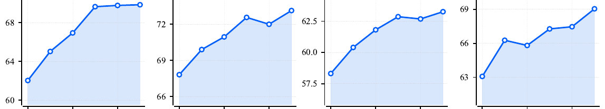
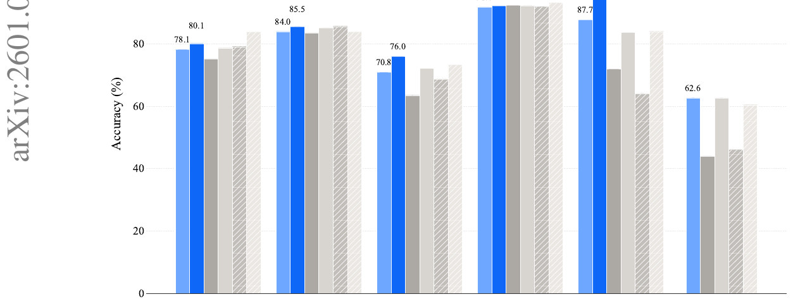

速览
日期以 arXiv v1（2026-01-14）为准；本页对照的 PDF 为 v2（2026-01-15），正文页码按 v2 计。
五句话看完
摘要数字是 PaCoRe 模式下的成绩
MMMU 80.11、MathVision 75.95、AIME2025 94.43表 3；MMBench 92.2 是 PaCoRe 下 EN/CN 的平均值 92.17§4.4。标准 SeRe 模式对应 78.11 / 70.81 / 87.66 / 91.80表 3推算。
7–10B 同档基本领先，但不是全胜
MathVision 70.81，比 MiMo-VL-RL-2508（59.65）、Qwen3-VL-8B（59.60）高 11 分以上表 1；计数和部分 OCR 落后：PixMo-Count 70.85 vs GLM-4.6V-Flash 76.42，OmniOCR 76.98 vs 80.24表 1。
数据重感知
Grounding & Counting 约 400M 样本、整页文档约 80M、arXiv 公式约 100M、GUI 约 23M§2.2。各域配比和 token 占比原文未披露。
感知任务做 RL 后，回答反而变短
RLVR 600 步里 reward 升到约 0.8 仍未饱和，平均 rollout 长度先升后回落到起点§5.2 · 图 2。作者归因于推理任务变长、感知任务变短，两者互相抵消，并据此引入 PaCoRe。
PaCoRe 对比时算力并不对等
PaCoRe 先跑 16 条 SeRe 再综合§4.1，基线只跑单次；推理成本原文未披露。另有 3 项 PaCoRe 低于 SeRe，例如 M3GIA 78.33→73.50表 3。
架构：PE-lang + Qwen3-8B，刻意做减法
原文没有架构总览图（附录 Fig. 4–7 是 Morse 码、编辑器截图等定性案例，不是架构图）。下图按 §2.1 文字画成示意。
相对同类的取舍（作者给出的理由）
- 选语言对齐版 PE，不用空间版。理由是预对齐的语言特征收敛更好§2.1。300M 规模消融里，PE-lang 对 DINOv3 在 OCRBench 上 +12.50，在 BLINK 上 −1.16表 4。
- 投影层借鉴 Step-3 / DeepSeek-OCR：两层 stride-2，空间压 16ק2.1。
- 不用变长打包：全局 728² + 局部 504² 的 multi-crop 走 batch 维并行§2.1。
- 位置编码用标准 1D RoPE，空间结构只靠 patch 行末的换行 token 表达；作者说更复杂的变体在他们的设置里没有明显收益§2.1。
- 不用 DeepStack（Qwen3-VL 用了）：收敛更快，但下游没有实质收益，算力开销不划算§5.1 · 表 6。
- 优化器用 AdamW，不用 Muon：Muon 在长尾知识上更好（SimpleVQA 高 6.48），但从 AdamW 初始化的权重切到 Muon 要很长 warmup，整体效率反而更低§5.1 · 表 5。
三组架构消融原表（表 4–6）300M 编码器 · 未训到最终 ckpt · few-shot
表 4 · 视觉编码器：DINOv3（ViT-L/16, 300M）vs PE-lang（300M）
| 设置 | BLINK | OmniSpatial | MMVP | OCRBench | MMStar | SimpleVQA | CCBench | V* | MMMU | ReMI |
|---|---|---|---|---|---|---|---|---|---|---|
| DINOv3 | 42.35 | 43.31 | 28.00 | 57.60 | 41.43 | 22.18 | 56.32 | 34.55 | 46.56 | 24.50 |
| PE-lang (Ours) | 41.19 | 43.57 | 32.00 | 70.10 | 42.10 | 21.15 | 59.39 | 37.17 | 47.67 | 26.08 |
| Δ | −1.16 | +0.26 | +4.00 | +12.50 | +0.67 | −1.03 | +3.07 | +2.62 | +1.11 | +1.58 |
表 5 · 优化器：Muon vs AdamW
| 设置 | BLINK | OmniSpatial | MMVP | OCRBench | MMStar | SimpleVQA | CCBench | V* | MMMU | ReMI |
|---|---|---|---|---|---|---|---|---|---|---|
| Muon | 41.14 | 42.73 | 32.00 | 67.70 | 44.58 | 27.08 | 60.72 | 36.65 | 47.56 | 22.23 |
| Adam (Ours) | 40.72 | 44.94 | 29.33 | 71.10 | 41.77 | 20.60 | 60.13 | 39.27 | 46.11 | 25.00 |
| Δ | −0.42 | +2.21 | −2.67 | +3.40 | −2.81 | −6.48 | −0.59 | +2.62 | −1.45 | +2.77 |
表 6 · DeepStack 有 / 无
| 设置 | BLINK | OmniSpatial | MMVP | OCRBench | MMStar | SimpleVQA | CCBench | V* | MMMU | ReMI |
|---|---|---|---|---|---|---|---|---|---|---|
| w/ DeepStack | 40.72 | 42.92 | 26.00 | 71.20 | 43.31 | 28.66 | 63.94 | 36.65 | 47.44 | 26.96 |
| w/o DeepStack (Ours) | 40.61 | 43.57 | 31.33 | 69.30 | 42.44 | 25.20 | 62.80 | 38.22 | 47.78 | 26.96 |
| Δ | −0.11 | +0.65 | +5.33 | −1.90 | −0.87 | −3.46 | −1.14 | +1.57 | +0.34 | +0.00 |
Δ = 本文选择 − 对照方案。三组消融都在相同 token 数（具体数值原文未给）的预训练 checkpoint 上，以 few-shot 方式评测，没有训到最终 checkpoint附录 C.3。CCBench 只出现在消融表里，主评测没有它。
数据：六大域、规模给得细，配比一个没给
预训练语料 = 大规模文本语料（引 SmolLM3, Bakouch et al. 2025）+ 六个多模态域§2.2。下面先看各域已披露的规模；原文没有给出任何域的 token 占比，所以这里不画配比条。
| 域 / 子集 | 来源与做法 | 已披露规模 |
|---|---|---|
| Knowledge 知识 | ||
| 交错图文 | Common Crawl + 自研中文互联网爬虫 StepCrawl + 关键词搜索；丢弃图片下载失败率 >90% 的网页、二维码内容、极端长宽比图片 | 原文未披露 |
| 图文对 ① 开源 | LAION、COYO、BLIP-CCS、Zero；按 CLIP 聚类做概念均衡重采样，缓解长尾 | 原文未披露 |
| 图文对 ② 检索 | 从高质量知识网站挖关键词，到百度、Bing 等商业搜索引擎检索 | 原文未披露 |
| 图文对 ③ 交错抽取 | 每张图取上方文字、下方文字、alt-text 作为候选描述；CLIP 相似度评对齐，美学分评图像质量，选最合适的一条 | 原文未披露 |
| 图文对 ④ Mosaic | 4 张图拼成 1 个输入：等效提高分辨率和信息密度，练跨区域的空间/位置推理 | 原文未披露 |
| Education 教育 | ||
| K-12 / 大学 / 成人考试 | 数理化与人文；化学式与结构图来自开源 + CoSyn 合成；几何题混合合成数据与带标注 caption 的真实试卷图；大学 STEM/医学/艺术/金融；驾照、CPA、法考。题目来自授权题库 + 开源题集 | 约 15M 样本§2.2 |
| OCR | ||
| Image → Text | 真实图来自开源集，用 PaddleOCR 标注；合成用 SynthDog，覆盖字体/版式/方向 | 10M 真实 + 30M 合成§2.2 |
| Image → Code（标记类） | Markdown / LaTeX / Matplotlib：开源数据 + 自动合成信息图；不完全交给 LLM 生成，而是在多种渲染工具上强制细粒度渲染规则 | 开源 10M+ ，合成信息图 15M+§2.2 |
| Image → Code（程序图形） | TikZ / Graphviz 重建任务：把自然图、人工表格、几何图翻成可执行代码 | 约 5M§2.2 |
| Document → Text | 书籍和论文整页，用 PaddleOCR 或 MinerU 2.0 标注 | 约 80M 页§2.2 |
| Document → Code | HTML（表格为主）/ Markdown（GitHub README 渲染）/ LaTeX（arXiv）；渲染时显式处理引用、超链接，避免图文不一致；另加开源集 | arXiv：约 4M 表格、100M 公式§2.2 |
| Grounding & Counting | ||
| 框 + 点 | OpenImages、COCO、Merlin、PixMo + 自有文本段落检测；计数来自开源集，并把高质量检测标注转成计数题 | 约 400M 样本§2.2 |
| VQA | ||
| 通用 VQA | 开源 VQA + 从 caption 数据自动生成的高质量问答对 | 约 10M§2.2 |
| OCR VQA | 开源 + 由其他 OCR 任务转出的问答对 | 约 20M§2.2 |
| GUI（沿用 Step-GUI 做法） | ||
| 总量 | Android / iOS / Windows / Linux / macOS，200+ 应用；grounding 标注与轨迹数据同步生成，保证动作与感知监督一致 | 约 23M 样本§2.2 |
| Caption | UI 界面详细描述：页面布局、功能区域 | 700K |
| Knowledge VQA | UI 元素定位与功能问答 | 1M+ |
| Trajectory | 12 种原子动作（CLICK、SLIDE、TYPE 等）；任务含操作执行、信息检索、信息汇总 | 2M+ |
| Grounding | 点 + 框，多种布局与分辨率 | 19M+ |
| OCR（Browser-use） | 爬网页，抽文本和精确元素坐标 | 约 30M 网页 |
GUI 前四个子集合计约 22.7M推算，和「约 23M」对得上；OCR 子集按「网页」计，约 30M，看起来不在 23M 之内，口径原文没说清。
预训练两相配比 未披露
前 900B token 用一种配比，后 300B「换成更高质量的数据配比」，用来巩固 OCR、grounding 等细粒度感知和推理能力§2.3。两相各域比例、文本与多模态之比，原文都没有给。
SFT 数据 §3.1
- 开源社区收集的数百万 prompt（数学、代码、科学、逻辑）+ 开源感知数据（grounding、OCR、文档/图表）。
- 回答从内部前沿模型蒸馏。
- 「两道过滤」：① 规则去退化模式（如无限重复）；② 基准去污染，精确匹配 + 64-gram 匹配。
- 各领域在 dataloader 里有不同采样权重，相当于不同 epoch 数；具体权重原文未披露。
SFT 两阶段的文 : 图比例（原文给出）
比例按样本数（原文 “text to multimodal samples”），不是 token 占比。
RL 数据怎么筛（全文最可复用的一段）
训练配方：一段预训练 → 两段 SFT → 三段 RL
单阶段、全参解冻
- token
- 1.2T
- 迭代
- 370K
- batch
- 8,192
- 序列
- 4,096
- 优化器
- AdamW
- β₁=0.9、β₂=0.95、ε=10⁻⁸、wd=0.01
- 前 900B：LR 5e-5 → 1e-5
- 后 300B：换高质量配比，1e-5 → 6e-6 退火
先文本推理，再多模态
- Stage 1
- 9:1，约 190B
- Stage 2
- 1:1，约 36B
- batch
- 32
- 序列
- 128k
- cosine，200 步 warmup
- 峰值 LR 1e-4 → 终值 1e-5
RLVR 600 → RLHF 300
- RLVR
- 512 题 × 16 条，24k
- RLHF
- 512 题 × 8 条，32k
- PPO + GAE（γ=1, λ=1），每步 4 个 mini-batch
- actor LR 2e-6，critic LR 5e-6
- off-policy 变体，去掉标准重要性采样；截断 IS，阈值 C=8
并行协同推理 500 步
- 每步
- 64 题 × 16 条
- 序列
- 64k
- 设置
- 严格 on-policy
- 只用可验证 reward
- 数据见上节 Synthesis Filtration
600 + 300 + 500 = 1,400推算，与 §3.2.1 一致；摘要写的是「超过 1k 次迭代」。全程只更新解码器，编码器冻结§3.2.1。
可验证 reward §3.2.2
- 感知 reward：pointing / grounding 按 IoU 或欧氏距离对齐真值（沿用 Perception-R1），用严格的距离衰减做 shaping。
- 模型判分：GPT-OSS-120B 当答案判官；不受格式影响（如非常规 LaTeX），认等价表达，并惩罚“答案对、过程错”的假阳性。
不可验证 reward §3.2.2
- GenRM：成对比较，拿 rollout 和更强 teacher 的回答比；先写推理判断，再给细粒度标量分。
- 行为正则：语言一致性惩罚（防中英混杂、问答语言不一致）；引用核验，发现编造的引用或链接就把 reward 置零；认知校准惩罚，压制无依据的过度自信。
PaCoRe 推理流程
论文图 2 · RLVR 训练动态 本页未收录原图
原文图 2（p.18）：右图 reward 在 600 步内持续上升、接近 0.8 仍未饱和；左图平均 rollout token 数先升后回落到起点附近§5.2 · 图 2。作者解释为推理任务变长、感知任务变短，两者相互抵消。随附的 figures/fig2.jpg 与 fig3.jpg 是同一文件（内容为图 3），所以这里只做文字转述。

为什么要 PaCoRe：「缺失痕迹」假说§5.2
感知类任务（grounding、OCR）的 RL 收益主要来自降熵：剪掉多余的探索 token，把高温下的 Pass@N 收敛成稳定的 Pass@1，所以回答会变短。作者推测，人类看图时「先扫一眼再聚焦、试错再修正」的过程很少被写进语料，RL 没有可以放大的行为痕迹。PaCoRe 让多个 proposer 先把视觉假设显式写出来，再由综合步交叉核对，等于把这段隐式过程外化。附录表 7 给了一个 grounding 案例：模型汇总多份参考坐标，再推断最终点位。
评测：同档领先，PaCoRe 再抬一截
推理设置固定为 temperature 1.0、top-p 1.0、top-k 0§4.1。对比分两组：7–10B 开源（GLM-4.6V-Flash 9B、Qwen3-VL-Thinking 8B、InternVL-3.5 8B、MiMo-VL-RL-2508 7B），以及大 10–20 倍的模型和闭源旗舰（GLM-4.6V 106B-A12B、Qwen3-VL-Thinking 235B-A22B、Gemini-2.5-Pro、Seed-1.5-VL-Thinking）§4.1。

和大模型 / 闭源旗舰比（精选自表 3）
纵轴从 0 起，满分 100。* 为原文标注的「取自原论文」数值（Gemini-2.5-Pro 的 MathVision）。
| 基准 | STEP3 SeRe | STEP3 PaCoRe | GLM-4.6V 106B-A12B | Qwen3-VL-Thinking 235B-A22B | Gemini-2.5-Pro | Seed-1.5-VL-Thinking |
|---|---|---|---|---|---|---|
| MMMU | 78.11 | 80.11 | 75.20 | 78.70 | 83.89 | 79.11 |
| MMMU-Pro | 64.08 | 67.18 | 65.84 | 72.37 | 76.96 | 70.60 |
| MathVision | 70.81 | 75.95 | 63.50* | 72.10 | 73.30* | 68.70* |
| MMBench EN | 92.05 | 92.38 | 92.75 | 92.70 | 93.19 | 92.11 |
| SimpleVQA | 53.08 | 54.64 | 57.95 | 59.30 | 66.85 | 64.72 |
| HallusionBench | 64.91 | 64.54 | 60.63 | 65.58 | 65.63 | 64.13 |
| M3GIA | 78.33 | 73.50 | 78.72 | 81.00 | 83.11 | 83.22 |
| CountQA | 33.69 | 38.29 | 36.32 | 45.62 | 38.02 | 48.89 |
| OCRBench | 86.75 | 89.00 | 86.20 | 87.30 | 85.90 | 85.20 |
| OmniOCR | 76.98 | 78.14 | 84.53 | 87.20 | 66.05 | 87.80 |
| All-Angles-Bench | 57.21 | 64.71 | 62.94 | 60.59 | 65.88 | 57.65 |
| MindCube-tiny | 62.81 | 68.58 | 52.83 | 47.58 | 58.92 | 39.83 |
| MMLU-Pro | 76.02 | 77.09 | 79.96 | 83.75 | 86.45 | 83.39 |
| SuperGPQA | 50.38 | 53.15 | 53.28 | 64.20 | 65.00 | 60.50 |
| AIME2025 | 87.66 | 94.43 | 71.88 | 83.59 | 83.96 | 64.06 |
| HMMT25 | 78.18 | 92.14 | 57.29 | 67.71 | 65.68 | 51.30 |
精选自表 3，含 STEP3 落后的行（SimpleVQA、OmniOCR、MMLU-Pro、SuperGPQA）和 PaCoRe 反降的行（HallusionBench、M3GIA）。
PaCoRe 相对 SeRe 的增益（不全是正的）
Δ = PaCoRe − SeRe（百分点），均来自表 3 的两列推算。文本数学题涨得最多；表 3 里 PaCoRe 低于 SeRe 的只有 M3GIA、HallusionBench、MMVP 三项（橙色）。§5.2 原文报告的增益：MathVision +5.14、DynaMath +5.09、CountQA +4.6、OCRBench +2.25、All-Angles-Bench +7.50、SpatialViz-Bench +6.52。
同档 7–10B 对比（精选自表 1 / 表 2）
| 基准 | STEP3-VL-10B | GLM-4.6V-Flash 9B | Qwen3-VL-Thinking 8B | InternVL-3.5 8B | MiMo-VL-RL-2508 7B |
|---|---|---|---|---|---|
| MMMU | 78.11 | 71.17 | 73.53 | 71.69 | 71.14 |
| MathVision | 70.81 | 54.05 | 59.60 | 52.05 | 59.65 |
| MMBench EN | 92.05 | 91.04 | 90.55 | 88.20 | 89.91 |
| HallusionBench | 64.91 | 59.92 | 62.23 | 58.79 | 63.53 |
| PixMo-Count | 70.85 | 76.42 | 69.51 | 63.24 | 69.98 |
| HumanEval-V | 66.05 | 29.26 | 26.94 | 24.31 | 31.96 |
| OCRBench | 86.75 | 85.97 | 82.85 | 83.70 | 85.40 |
| OmniOCR | 76.98 | 80.24 | 75.53 | 70.97 | 74.38 |
| MindCube-tiny | 62.81 | 45.00 | 41.06 | 34.65 | 39.06 |
| OmniDocBench (NED) ↓ | 21.51 | 24.88 | 23.38 | 29.47 | 23.30 |
| ScreenSpot-Pro | 51.55 | 45.68 | 46.60* | 15.39 | 34.84 |
| OSWorld-G | 59.02 | 54.71 | 56.70* | 31.91 | 50.54 |
| ScreenSpot-V2 | 92.61 | 92.14 | 93.60* | 84.02 | 90.82 |
| MMLU-Pro | 76.02 | 72.30 | 77.09 | 76.03 | 73.81 |
| AIME2025 | 87.66 | 33.02 | 62.92 | 62.50 | 66.51 |
| HMMT25 | 78.18 | 19.17 | 45.21 | 35.78 | 47.34 |
| BeyondAIME | 63.23 | 11.80 | 30.59 | 66.56 | 43.94 |
| LiveCodeBench (2408-2505) | 75.77 | 22.17 | 51.05 | 45.90 | 39.65 |
| Arena-Hard-V2 | 58.57 | 9.26 | 47.34 | 15.57 | 28.59 |
精选自表 1（多模态）与表 2（文本，最后 6 行）。完整表见下方折叠区。
强项 表 1 / 表 2
- 视觉编码：HumanEval-V 66.05，次优为 31.96。
- GUI：ScreenSpot-Pro 51.55，OSWorld-G 59.02，MMBench-GUI L2 81.50。
- 空间：MindCube-tiny 62.81，次优 45.00；SpatialViz-Bench 45.51。原文称空间方向没有专门构造数据§4.2。
- 文本：AIME2025 87.66，HMMT25 78.18，LiveCodeBench 75.77，Arena-Hard-V2 58.57。
不占优的项 表 1 / 表 2
- 计数：CountBench、CountQA、PixMo-Count 都输给 GLM-4.6V-Flash。
- OCR：OmniOCR 76.98 vs GLM-4.6V-Flash 80.24。
- 空间：CVBench、RealWorldQA、V* 输给 GLM-4.6V-Flash。
- Design2Code / (hard)：输给 MiMo-VL-RL-2508（82.54 / 59.38）。
- ScreenSpot-V2 92.61 vs Qwen3-VL-8B 93.60*；CharXiv (RQ) 59.52 vs GLM-4.6V-Flash 59.70；MM-MT-Bench、MIA-Bench 略低于 Qwen3-VL-8B。
- MMLU-Pro、LiveBench、IFEval、HealthBench、CNMO2024：Qwen3-VL-8B 更高。
表 1 全表：7–10B 开源模型 · 多模态基准55 行
| 基准 | STEP3-VL-10B | GLM-4.6V-Flash 9B | Qwen3-VL-Thinking 8B | InternVL-3.5 8B | MiMo-VL-RL-2508 7B |
|---|---|---|---|---|---|
| STEM / 多模态推理 | |||||
| MMMU | 78.11 | 71.17 | 73.53 | 71.69 | 71.14 |
| MMMU-Pro | 64.08 | 59.93 | 60.94 | 59.11 | 60.29 |
| MathVision | 70.81 | 54.05 | 59.60 | 52.05 | 59.65 |
| MathVista | 83.97 | 82.85 | 78.50 | 76.78 | 79.86 |
| LogicVista | 66.89 | 60.29 | 64.37 | 54.03 | 63.37 |
| DynaMath | 56.39 | 48.40 | 45.11 | 39.47 | 51.65 |
| ZeroBench (main) | 1.00 | 0.50 | 0.50 | 0.75 | 0.50 |
| ZeroBench (sub) | 27.54 | 24.03 | 20.58 | 18.56 | 21.18 |
| MathVerse (vision) | 75.73 | 71.41 | 73.19 | 65.18 | 73.19 |
| We-Math | 73.03 | 61.86 | 67.31 | 51.26 | 63.24 |
| VisuLogic | 29.68 | 26.50 | 27.82 | 27.20 | 24.52 |
| PhyX | 59.45 | 52.28 | 57.67 | 50.51 | 56.00 |
| HLE | 10.73 | 3.82 | 5.98 | 4.51 | 5.90 |
| 识别 / 通用 VQA | |||||
| MMBench EN | 92.05 | 91.04 | 90.55 | 88.20 | 89.91 |
| MMBench CN | 91.55 | 89.56 | 89.75 | 86.24 | 88.79 |
| SimpleVQA | 53.08 | 52.09 | 48.69 | 41.43 | 49.65 |
| MMStar | 77.48 | 74.26 | 73.58 | 69.83 | 72.93 |
| HallusionBench | 64.91 | 59.92 | 62.23 | 58.79 | 63.53 |
| MMVP | 68.16 | 63.33 | 57.17 | 51.33 | 63.50 |
| ReMI | 67.29 | 60.75 | 57.17 | 52.65 | 63.13 |
| M3GIA | 78.36 | 76.66 | 76.86 | 62.38 | 65.84 |
| DoYouSeeMe | 67.48 | 65.52 | 56.90 | 38.22 | 60.92 |
| 计数 | |||||
| CountBench | 88.75 | 90.22 | 88.85 | 82.18 | 83.60 |
| CountQA | 33.69 | 33.79 | 23.35 | 22.32 | 27.41 |
| PixMo-Count | 70.85 | 76.42 | 69.51 | 63.24 | 69.98 |
| 指令遵循 | |||||
| MM-MT-Bench | 8.14 | 6.94 | 8.16 | 7.46 | 8.08 |
| MIA-Bench | 92.00 | 89.99 | 92.35 | 90.89 | 90.91 |
| MM-IFEval | 61.87 | 60.78 | 60.93 | 60.80 | 61.28 |
| 多模态代码 | |||||
| HumanEval-V | 66.05 | 29.26 | 26.94 | 24.31 | 31.96 |
| Design2Code | 79.55 | 25.93 | 72.21 | 64.15 | 82.54 |
| Design2Code (hard) | 54.69 | 19.37 | 48.75 | 46.25 | 59.38 |
| OCR | |||||
| OCRBench | 86.75 | 85.97 | 82.85 | 83.70 | 85.40 |
| OmniOCR | 76.98 | 80.24 | 75.53 | 70.97 | 74.38 |
| CC-OCR (Multi-Lang-OCR) | 76.59 | 70.85 | 69.25 | 66.42 | 72.06 |
| 2D / 3D 空间 | |||||
| BLINK | 66.79 | 64.90 | 62.78 | 55.40 | 62.57 |
| CVBench | 83.49 | 86.01 | 84.81 | 77.52 | 82.04 |
| MMSI-Bench | 32.18 | 31.13 | 29.05 | 28.12 | 29.60 |
| ERQA | 48.87 | 45.13 | 44.31 | 38.88 | 41.94 |
| OmniSpatial | 51.58 | 49.41 | 46.56 | 47.49 | 46.74 |
| All-Angles-Bench | 57.21 | 53.24 | 45.88 | 45.29 | 51.62 |
| MindCube-tiny | 62.81 | 45.00 | 41.06 | 34.65 | 39.06 |
| RealWorldQA | 74.44 | 76.93 | 71.93 | 66.93 | 72.78 |
| SpatialViz-Bench | 45.51 | 33.79 | 35.15 | 32.42 | 28.94 |
| STARE | 61.75 | 56.45 | 54.95 | 48.20 | 55.06 |
| CoreCognition | 66.69 | 65.11 | 64.04 | 61.70 | 65.30 |
| V* | 82.85 | 83.51 | 81.02 | 66.89 | 83.38 |
| ViewSpatial | 46.14 | 43.26 | 45.20 | 35.96 | 40.19 |
| 文档与图表 | |||||
| CharXiv (RQ) | 59.52 | 59.70 | 53.48 | 47.15 | 59.32 |
| AI2D | 89.35 | 88.93 | 83.32 | 82.34 | 84.96 |
| CSVQA | 63.33 | 54.99 | 61.32 | 46.62 | 60.23 |
| OmniDocBench (NED) ↓ | 21.51 | 24.88 | 23.38 | 29.47 | 23.30 |
| GUI Grounding | |||||
| ScreenSpot-Pro | 51.55 | 45.68 | 46.60* | 15.39 | 34.84 |
| OSWorld-G | 59.02 | 54.71 | 56.70* | 31.91 | 50.54 |
| ScreenSpot-V2 | 92.61 | 92.14 | 93.60* | 84.02 | 90.82 |
| MMBench-GUI (L2) | 81.50 | 78.46 | 76.60 | 63.95 | 75.69 |
来源：论文表 1。OmniDocBench 为 NED，越低越好。
表 2 全表：7–10B 开源模型 · 文本基准17 行
| 基准 | STEP3-VL-10B | GLM-4.6V-Flash 9B | Qwen3-VL-Thinking 8B | InternVL-3.5 8B | MiMo-VL-RL-2508 7B |
|---|---|---|---|---|---|
| 考试 | |||||
| MMLU-Pro | 76.02 | 72.30 | 77.09 | 76.03 | 73.81 |
| GPQA-Diamond | 70.83 | 49.37 | 67.55 | 65.12 | 59.97 |
| SuperGPQA | 50.38 | 42.95 | 49.52 | 42.35 | 45.69 |
| LiveBench(2024-11-25) | 69.71 | 44.11 | 70.79 | 55.62 | 54.35 |
| 数学 | |||||
| AIME2024 | 90.94 | 37.92 | 74.06 | 78.18 | 75.36 |
| AIME2025 | 87.66 | 33.02 | 62.92 | 62.50 | 66.51 |
| HMMT25 | 78.18 | 19.17 | 45.21 | 35.78 | 47.34 |
| CNMO2024 | 78.20 | 61.72 | 79.22 | 66.56 | 76.17 |
| BeyondAIME | 63.23 | 11.80 | 30.59 | 66.56 | 43.94 |
| IMO-AnswerBench | 62.12 | 22.62 | 38.69 | 35.00 | 48.44 |
| 代码 | |||||
| LiveCodeBench (2408-2505) | 75.77 | 22.17 | 51.05 | 45.90 | 39.65 |
| 指令遵循 | |||||
| IFEval | 82.16 | 74.86 | 83.23 | 79.72 | 68.62 |
| IFBench | 43.28 | 27.47 | 36.65 | 28.14 | 23.47 |
| MultiChallenge | 62.64 | 42.49 | 49.82 | 37.73 | 44.69 |
| 主观 | |||||
| Arena-Hard-V2 | 58.57 | 9.26 | 47.34 | 15.57 | 28.59 |
| WildBench | 86.04 | 34.04 | 72.36 | 56.45 | 63.09 |
| 医疗 | |||||
| HealthBench | 44.67 | 31.80 | 47.45 | 35.54 | 43.58 |
来源：论文表 2。InternVL-3.5 的 BeyondAIME 与 CNMO2024 同为 66.56，疑似抄录错误，见「局限与存疑」。
表 3 全表：对比大 10–20 倍的模型与闭源旗舰51 行
| 基准 | STEP3 SeRe | STEP3 PaCoRe | GLM-4.6V 106B-A12B | Qwen3-VL-Thinking 235B-A22B | Gemini-2.5-Pro | Seed-1.5-VL-Thinking |
|---|---|---|---|---|---|---|
| STEM / 多模态推理 | ||||||
| MMMU | 78.11 | 80.11 | 75.20 | 78.70 | 83.89 | 79.11 |
| MMMU-Pro | 64.08 | 67.18 | 65.84 | 72.37 | 76.96 | 70.60 |
| MathVision | 70.81 | 75.95 | 63.50* | 72.10 | 73.30* | 68.70* |
| MathVista | 83.97 | 85.50 | 83.51 | 85.10 | 83.88 | 85.60 |
| LogicVista | 66.89 | 71.36 | 64.88 | 73.15 | 69.80 | 72.93 |
| DynaMath | 56.39 | 61.48 | 56.29 | 60.30 | 52.30 | 58.88 |
| ZeroBench (main) | 1.00 | 5.00 | 1.00 | 3.00 | 4.00 | 1.00 |
| ZeroBench (sub) | 27.54 | 29.94 | 29.04 | 28.40 | 33.53 | 31.74 |
| MathVerse (vision) | 75.73 | 78.30 | 72.84 | 76.65 | 78.30 | 77.79 |
| We-Math | 73.03 | 73.90 | 71.14 | 74.70 | 80.10 | 79.05 |
| VisuLogic | 29.68 | 32.70 | 28.30 | 31.80 | 31.40 | 34.30 |
| PhyX | 59.45 | 66.01 | 59.70 | 66.30 | 67.56 | 62.53 |
| 识别 / 通用 VQA | ||||||
| MMBench EN | 92.05 | 92.38 | 92.75 | 92.70 | 93.19 | 92.11 |
| MMBench CN | 91.55 | 91.96 | 91.88 | 91.80 | 93.13 | 91.76 |
| SimpleVQA | 53.08 | 54.64 | 57.95 | 59.30 | 66.85 | 64.72 |
| MMStar | 77.48 | 77.64 | 75.30 | 76.80 | 79.18 | 77.91 |
| HallusionBench | 64.91 | 64.54 | 60.63 | 65.58 | 65.63 | 64.13 |
| MMVP | 68.16 | 68.00 | 71.33 | 71.30 | 70.67 | 74.00 |
| ReMI | 67.29 | 69.12 | 64.42 | 74.70 | 71.69 | 72.19 |
| M3GIA | 78.33 | 73.50 | 78.72 | 81.00 | 83.11 | 83.22 |
| DoYouSeeMe | 67.48 | 68.54 | 67.50 | 72.89 | 71.19 | 71.94 |
| 计数 | ||||||
| CountBench | 88.75 | 88.80 | 92.06 | 92.46 | 87.78 | 91.85 |
| CountQA | 33.69 | 38.29 | 36.32 | 45.62 | 38.02 | 48.89 |
| PixMo-Count | 70.85 | 71.61 | 76.47 | 79.80 | 75.54 | 83.38 |
| OCR | ||||||
| OCRBench | 86.75 | 89.00 | 86.20 | 87.30 | 85.90 | 85.20 |
| OmniOCR | 76.98 | 78.14 | 84.53 | 87.20 | 66.05 | 87.80 |
| CC-OCR (Multi-Lang-OCR) | 76.59 | 77.51 | 74.08 | 80.80 | 81.10 | 78.82 |
| 2D / 3D 空间 | ||||||
| BLINK | 66.79 | 67.39 | 68.17 | 67.12 | 72.01 | 71.54 |
| CVBench | 83.49 | 85.92 | 83.72 | 87.86 | 84.36 | 86.27 |
| MMSI-Bench | 32.18 | 36.40 | 30.80 | 32.50 | 40.40 | 30.60 |
| ERQA | 48.87 | 51.75 | 47.75 | 53.50 | 62.25 | 48.50 |
| OmniSpatial | 51.58 | 52.58 | 50.49 | 53.10 | 55.64 | 51.99 |
| All-Angles-Bench | 57.21 | 64.71 | 62.94 | 60.59 | 65.88 | 57.65 |
| MindCube-tiny | 62.81 | 68.58 | 52.83 | 47.58 | 58.92 | 39.83 |
| RealWorldQA | 74.44 | 75.56 | 77.78 | 78.80 | 77.78 | 79.61 |
| SpatialViz-Bench | 45.51 | 52.03 | 37.46 | 46.36 | 45.34 | 35.25 |
| STARE | 61.75 | 64.57 | 60.38 | 70.89 | 62.36 | 62.99 |
| CoreCognition | 66.69 | 71.54 | 69.50 | 72.66 | 78.78 | 72.38 |
| V* | 82.85 | 84.29 | 85.86 | 89.53 | 80.63 | 90.58 |
| ViewSpatial | 46.14 | 48.41 | 43.87 | 48.58 | 44.15 | 44.14 |
| 文本 · 考试 | ||||||
| MMLU-Pro | 76.02 | 77.09 | 79.96 | 83.75 | 86.45 | 83.39 |
| GPQA-Diamond | 70.83 | 73.99 | 69.19 | 77.68 | 84.06 | 71.91 |
| SuperGPQA | 50.38 | 53.15 | 53.28 | 64.20 | 65.00 | 60.50 |
| LiveBench(2024-11-25) | 69.71 | 71.69 | 62.75 | 80.14 | 76.34 | 65.62 |
| 文本 · 数学 | ||||||
| AIME2024 | 90.94 | 93.33 | 80.63 | 91.93 | 79.53 | 79.48 |
| AIME2025 | 87.66 | 94.43 | 71.88 | 83.59 | 83.96 | 64.06 |
| HMMT25 | 78.18 | 92.14 | 57.29 | 67.71 | 65.68 | 51.30 |
| CNMO2024 | 78.20 | 81.17 | 72.11 | 88.36 | 74.53 | 83.67 |
| BeyondAIME | 63.23 | 74.00 | 39.83 | 57.42 | 54.45 | 42.83 |
| IMO-AnswerBench | 62.12 | 76.66 | 51.25 | 69.25 | 72.00 | 44.75 |
| 文本 · 代码 | ||||||
| LiveCodeBench (2408-2505) | 75.77 | 76.43 | 48.71 | 69.45 | 72.01 | 57.10 |
来源：论文表 3。SeRe = 顺序推理（默认），PaCoRe = 并行协同推理（16 条 SeRe 综合）。
评测协议细节附录 C
- 文本基准重复评测取平均：AIME 2024/2025、HMMT25、CNMO2024、BeyondAIME 各 64 次；GPQA-Diamond、LiveCodeBench 各 16 次；IFEval、IFBench 各 4 次；其余 1 次附录 C.2。
- 多模态每个基准都公开了 prompt 模板；多数选择题要求以 “Final answer: [option]” 收尾；图像默认放在问题之前，原题图文交错时保留原位置附录 C.1。
- MMBench 报的是 v1.1 Dev；DynaMath 用 worst-case accuracy；MathVerse 只测 Vision-only 子集；MMVP 150 对，两题都对才算对；OmniDocBench 用 NED（越低越好）附录 C.1。
- HLE、SimpleVQA、MIA-Bench 按官方协议用 LLM 判分附录 C.1。
- GUI grounding 四个基准共用一个 prompt：输出 JSON 格式的坐标点附录 C.1。
- 正文还提到一个内部 Elo 偏好评测，说 STEP3-VL-10B 的偏好分追平大得多的开源模型，没有给出数值§4.3。
新在哪
把 PaCoRe 做成一个独立的 RL 阶段，并配套数据过滤
不只在推理时并行再综合：先单独训 500 步严格 on-policy 的 PaCoRe RL（64k 上下文），训练数据经过 Synthesis Filtration，把参考答案喂回去之后仍是 some-accept 的题才保留§3.2.4。
可核对：表 3 的 SeRe / PaCoRe 两列；PaCoRe 方法本身来自同团队的 Hu et al., 2026。
对感知 RL 回答变短的观察和解释
RLVR 的 rollout 长度先升后回落，作者拆解为推理任务变长、感知任务因降熵变短，两者抵消；进而提出「缺失痕迹」假说，作为引入 PaCoRe 的理由§5.2 · 图 2。
注意：假说部分没有按任务拆开的长度曲线来直接验证。
三轴 RLVR 数据过滤，加上惩罚“答案对、过程错”的判官
可验证性（判官 4 次全一致）× 视觉相关性（图与题互相需要）× 难度（24 次 rollout 取 some-accept）；判分用 GPT-OSS-120B，答案对但推理有缺陷也判错§3.2.2–3.2.3。
每一步都说“不可或缺”，但没有给逐项消融。
RLHF 里加了引用核验和认知校准两类惩罚
发现编造的引用或链接，reward 直接置零；对无依据的过度自信加惩罚；另有语言一致性惩罚§3.2.2。
只有设计描述，没有量化效果。
10B 规模的「减法」型架构选择都有消融
PE-lang 对 DINOv3、AdamW 对 Muon、去掉 DeepStack，三组都给了 10 个基准的对照表 4–6。结论本身不新（语言对齐编码器更好），价值在于给出了负面结果（DeepStack 无收益、Muon 因初始化不匹配被弃用）。
对图像编辑数据、评测与 caption 的启示
STEP3-VL-10B 不是编辑模型，但它的 caption 选择、合成数据约束、RL 数据过滤和评测协议都能直接搬。每条先写论文做法，再写迁移建议（不是论文内容）。
C1多候选 + 对齐分择优，不靠单次生成
论文：交错网页里每张图取上方、下方文本和 alt-text 三类候选，用 CLIP 相似度评对齐、用美学分评图像质量，选出最合适的一条§2.2。
迁移建议，不是论文内容：编辑指令也按「候选池 → 打分 → 择优」来做：用户原话、VLM 改写、模板指令各出一条，用 src/tgt 差异描述与指令的对齐分（VLM 或差分 CLIP）挑一条；美学分只用来过滤 tgt 图，不参与指令选择。
C2多份描述先汇总再定稿，提升召回
论文：PaCoRe 先并行生成 16 条回答再综合；在依赖高召回的任务上增益明显，如 CountQA +4.6、OCRBench +2.25§5.2；但 HallusionBench、MMVP 略降，M3GIA 降 4.83表 3。
迁移建议，不是论文内容：为编辑对写「改了什么 / 没改什么」的密集 caption 时，可以采 N 份 VLM 描述再让模型合并去重，减少漏写的改动；合并后要单独过一遍幻觉检查，因为综合步可能把少数描述里的错误吸收进来。
C3结构化的界面 caption 单列一个子集
论文：GUI 数据里单独做了 700K 条 UI 详细 caption，专讲页面布局和功能区域，和 grounding、轨迹数据分开§2.2。
迁移建议，不是论文内容：编辑数据的 caption 可分层：全局场景描述、区域级「对象 + 位置」描述、编辑操作描述各成子集，分别控制配比，而不是一段话全塞进去。
D1合成数据用规则渲染，保证 GT 精确
论文：15M+ 合成信息图不完全交给 LLM，而是在多种渲染工具上强制细粒度渲染规则；文档转代码时显式处理引用和超链接，防止图文不一致§2.2。
迁移建议，不是论文内容：文字编辑、海报/版式编辑这类任务，用程序化渲染同时产出 src、tgt 和像素级 mask，得到可精确评测的 GT；凡是渲染后可能和源码对不上的元素（换行、截断、字体回退），在渲染阶段就校验。
D2标注和生成同步产出，不事后补标
论文：GUI 的 grounding 标注和轨迹数据同步生成，保证动作执行与感知监督一致§2.2。
迁移建议，不是论文内容：生成编辑对时，在同一条流水线里记录 op 类型、目标 bbox/mask、保留区域，不要先出图再让另一个模型反推标注，以免指令、mask 与实际改动三者不一致。
D3概念均衡重采样
论文：开源图文对（LAION、COYO 等）用 CLIP 聚类做概念均衡重采样，缓解长尾概念不平衡§2.2。
迁移建议，不是论文内容：编辑数据按「编辑类型 × 主体类别」两维聚类后重采样，避免人像换背景、加文字这类高频操作挤占长尾操作。
D4三轴筛 RL / 偏好数据
论文：GPT-OSS-120B 判 4 次全一致才留；早期模型检查图和题是否互相需要；24 次 rollout 只留 some-accept§3.2.3。
迁移建议，不是论文内容：编辑 RL 的 prompt 池可照搬：VLM 判官多次判「指令是否可判定」，全一致才留；剔除不看图也能完成的指令；用当前模型采样 N 次，去掉全过或全挂的指令，只留有梯度信号的中间难度。
D5训练集对评测集做 n-gram 去污染
论文：SFT 数据对基准做精确匹配 + 64-gram 匹配去污染§3.1。
迁移建议，不是论文内容：编辑训练集与自建评测集之间同时做指令文本 n-gram 去重和图像感知哈希去重，两个都查才算干净。
E1判官先写理由再打分，并对照参考答案
论文：GenRM 把 rollout 和更强 teacher 的回答成对比较，先显式推理再给细粒度标量分；可验证判官惩罚“答案对、过程错”§3.2.2。
迁移建议，不是论文内容：VLM 编辑评测判官改为「对照参考输出成对比较 + 先列证据再打分」；对指令遵循维度，额外检查「看起来对、但改错了区域」的情况，相当于编辑版的“过程错”。
E2高方差基准多跑几次取平均，并公开 prompt
论文：AIME 等跑 64 次、GPQA 跑 16 次取平均；温度固定 1.0；附录列出每个基准的 prompt 模板附录 C。
迁移建议，不是论文内容：编辑评测报告每条样本的生成种子数和重复次数，判官 prompt 与模板随结果一起发布；小集合（百条级）至少多种子平均，并报方差。
E3测试时扩展的结果单独列，并写清算力
论文：表 3 把 SeRe 和 PaCoRe 分两列报，但 PaCoRe 的推理成本没有给出表 3 · §4.1。
迁移建议，不是论文内容：编辑模型用 best-of-N、判官重排时，和单次生成的结果分开报，并写明 N、判官模型和每样本耗时，避免把多采样的收益算成模型本身的收益。
局限与存疑
- 配比全未披露。六个多模态域与文本语料的占比、第二相「更高质量配比」的构成、SFT 各领域采样权重，原文都没给，只有样本规模§2.2–§3.1。
- PaCoRe 对比算力不对等。PaCoRe 每题先跑 16 条 SeRe 再综合，上下文最长 131,072；对比模型是单次结果。原文没有报告推理 token 数或延迟§4.1 · 表 3。
- 摘要数字的模式没有标注。摘要和引言里的 MMMU 80.11、MathVision 75.95、AIME2025 94.43、MMBench 92.2 都是 PaCoRe 结果，正文第 1 节没有说明摘要 · §1 · 表 3。
- “PaCoRe 一致优于 SeRe”与表 3 不完全一致。M3GIA 78.33→73.50，HallusionBench 64.91→64.54，MMVP 68.16→68.00§4.4 · 表 3。
- “在感知、识别上超过 GLM-4.6V”与表 3 不完全一致。SeRe 模式下 MMBench EN 92.05 vs 92.75、SimpleVQA 53.08 vs 57.95、CountBench 88.75 vs 92.06、OmniOCR 76.98 vs 84.53 都是 GLM-4.6V 更高§4.4 · 表 3。
- 预训练规模口径对不上。370K 迭代 × batch 8,192 × 序列 4,096 ≈ 12.4T token 容量，而正文写的是 1.2T推算。可能 batch 不是按满长度序列计数，原文没有解释§2.3。
- “GUI 领跑”的措辞偏强。正文说 ScreenSpot-V2 92.61 “dominates the leaderboard”，但表 1 中 Qwen3-VL-Thinking 8B 为 93.60*（取自原论文）§4.2 · 表 1。
- 表间数值不一致。M3GIA 在表 1 是 78.36，在表 3 的 SeRe 列是 78.33表 1 · 表 3。
- 表 2 有疑似抄录错误。InternVL-3.5 的 BeyondAIME（66.56）和它的 CNMO2024 完全相同，且高于 STEP3-VL-10B 的 63.23；正文却称 STEP3-VL-10B 在数学上显著领先表 2 · §4.3。
- 消融可信度有限。编码器只有 300M，checkpoint 没训到最终，few-shot 评测，单次运行没有方差；Δ 正负混杂（如 DINOv3 在 BLINK、SimpleVQA 更高）表 4–6 · 附录 C.3。RL 三个阶段、SFT 两阶段比例、三轴过滤都没有逐项消融。
- 对比数值来源混杂。只有部分数值标了 *（取自原论文，如 Qwen3-VL-8B 的 GUI 三项、表 3 里 GLM-4.6V / Gemini / Seed 的 MathVision），其余是否自测、闭源模型用什么协议，原文没有逐项说明表 1 · 表 3。
- 内部评测不可复现。“内部 Elo 偏好评测追平更大开源模型”没有数值；RLVR 数据里的内部 K-12 资源、RLHF 的内部指令池、SFT 蒸馏用的内部前沿模型都未公开§3 · §4.3。
- GUI 数据口径。前四个子集合计约 22.7M，与总量约 23M 吻合；约 30M 网页的 OCR 子集是否计入总量，原文未说明§2.2推算。
图表索引
| 编号 | 内容 | 本页位置 |
|---|---|---|
| 图 1 | 与前沿多模态模型在六个基准上的对比柱状图（p.1） | 评测 |
| 图 2 | RLVR 训练中 rollout 长度与 reward 曲线（p.18） | 训练配方（文字转述；裁图文件与图 3 重复，未收录） |
| 图 3 | RLVR 期间 MathVision / We-Math / MMMU-Pro / ReMI 的变化（p.18） | 训练配方 |
| 图 4–7 | 附录定性案例：Morse 码表、LaTeX 编辑器截图计数、失焦显示器品牌识别、带权图最短边（p.34–37） | 未收录（不是架构图） |
| 表 1 | 与 7–10B 开源模型的多模态对比 | 评测 |
| 表 2 | 与 7–10B 开源模型的文本对比 | 评测 |
| 表 3 | 与大 10–20 倍的模型、闭源旗舰对比（含 SeRe / PaCoRe） | 评测 |
| 表 4–6 | 编码器、优化器、DeepStack 消融 | 架构 |
| 表 7 | PaCoRe 的一个感知案例（grounding 综合推理） | 训练配方（文字转述） |
| 表 8 | PaCoRe 综合阶段的输入序列化模板 | 训练配方（示意图） |